Арракин
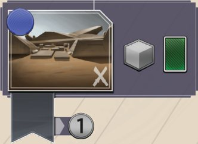
Наймите 1 отряд и возьмите 1 карту
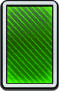
. Игрок, контролирующий «Арракин», получает 1 солярий.Пол Деннен. 1–4 игрока, командный режим на 6. Размещение рабочих и построение колоды: отправляйте агентов, копите влияние во фракциях и побеждайте в сражениях за Арракис. Здесь собраны все четыре буклета: основные правила, справочник ячеек, правила для 1–2 и для 6 игроков. Метка «стр. N» открывает страницу оригинального буклета.
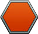
в каждую ячейку с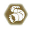
, где нет агента.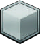
= 2, червь = 3, меч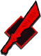
= 1.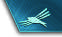
= 1 ПО.Вы — лидер одного из Великих Домов Ландсраада или другая влиятельная фигура Империи. Побеждайте в сражениях, зарабатывайте политическое влияние и заключайте союзы с 4 фракциями. Успехи измеряются в победных очках (ПО) : получая или теряя ПО, двигайте свой маркер по треку.
У каждого лидера 2 уникальные способности. Левая действует всю игру. Правая отмечена символом кольца с печаткой
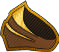
: чтобы применить её, разыграйте в свой ход карту «Кольцо с печаткой» для отправки агента.За именем лидера стоят символы сложности: от 1 до 3. Для первой партии берите лидеров с 1 символом.
Все начинают с одинаковой колодой из 10 карт. Новые карты покупаются на рынке Империи или в резерве и кладутся в сброс. Когда нужно взять карту, а колода пуста, перемешайте сброс — это новая колода.
Некоторые действия позволяют удалять карты : они уходят из игры. Избавляясь от слабых карт, вы чаще берёте сильные.
Вы начинаете с 2 фишками агентов, третьего — оружейника — можно получить в ходе партии. Агентов отправляют в ячейки поля, чтобы получить ресурсы или обменять их на эффекты. Агенты и карты связаны: чтобы отправить агента в ячейку, нужно разыграть карту с подходящим символом.
В «Восстании» нет фишки ментата.
В игре 4 фракции:
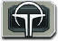
Император,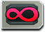
Гильдия Космогации, Бене Гессерит и Фримены. Вы начинаете с кубиком под треком влияния каждой из них. Отправив агента в ячейку фракции, поднимите свой кубик на 1 деление; влияние меняют и эффекты карт.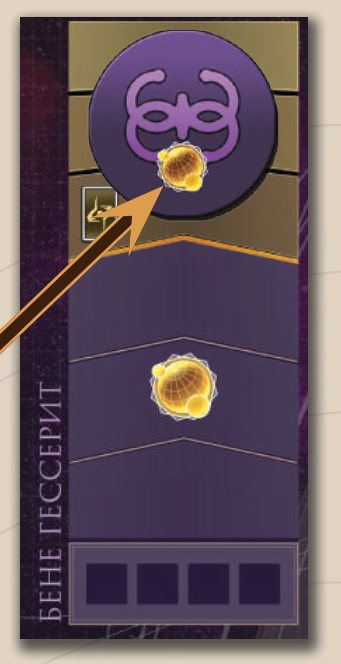
Специальные операции и тайные договорённости: дают ресурсы, влияние и даже ПО. Получить их можно в ячейках «Тайны», «Сардаукары» и «Зал собраний» и за символы на картах. Держите их лицом вниз отдельно от колоды; смотреть свои можно в любое время. Разыгранная карта идёт в сброс рядом с колодой интриг.
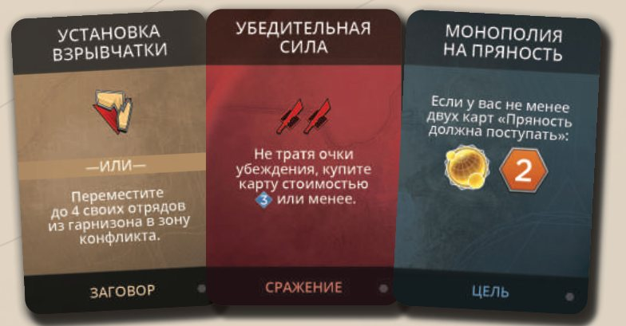
Про вселенную, а не про правила. Император Шаддам IV даёт финансы и воинов-сардаукаров. Гильдия Космогации владеет монополией на межзвёздные перевозки и берёт плату Пряностью. Бене Гессерит плетут интриги на поколения вперёд. Фримены воюют в пустыне и ездят на песчаных червях. Ландсраад за солярии даёт связи и стратегические преимущества. КООАМ платит соляриями за контракты и Пряность. Населённые области Дюны — места найма отрядов; Барьерная Стена защищает часть из них и Имперскую котловину от червей.
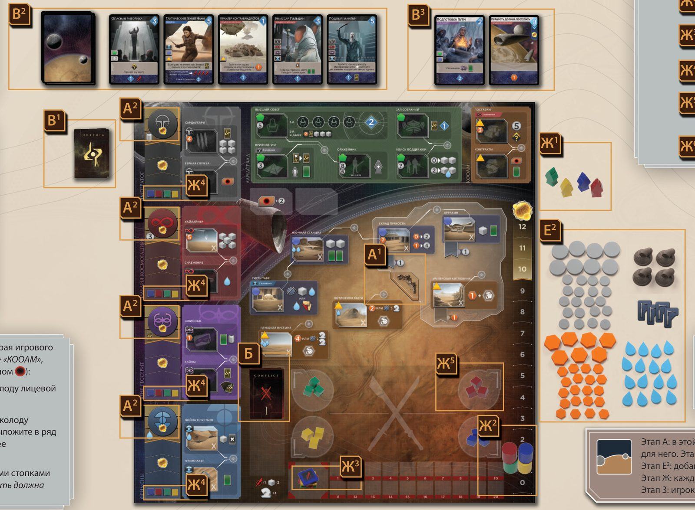
Для 1, 2 и 6 игроков есть дополнительные шаги: см. «1–2 игрока» и «6 игроков».
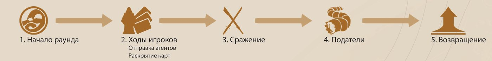
В любой момент своего хода в фазе 2 можно разыгрывать карты заговора.
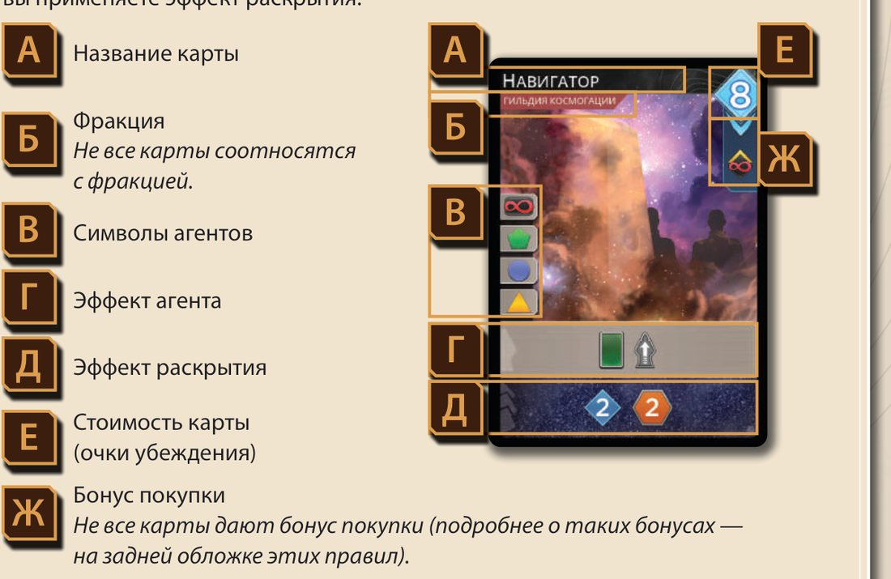
У карты два эффекта: эффект агента (серая полоса) и эффект раскрытия (нижняя полоса). За один ход применяется только один из них: отправляя агента — эффект агента, раскрывая карты — эффект раскрытия. В правом верхнем углу — стоимость в очках убеждения, под ней бывает бонус покупки.
Карту без символов агентов нельзя разыграть для отправки агента — у неё есть только эффект раскрытия.
| Символ | Ячейки на основном поле | |
|---|---|---|
| Император | «Верная служба», «Сардаукары» | |
| Гильдия Космогации | «Снабжение», «Хайлайнер» | |
| Бене Гессерит | «Тайны», «Шпионаж» | |
| Фримены | «Война в пустыне», «Фримпакет» | |
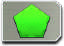 | Ландсраад | «Высший Совет», «Зал собраний», «Оружейник», «Поиск поддержки», «Привилегии» |
| Город | «Арракин», «Научная станция», «Сиетч Табр», «Склад Пряности» | |
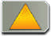 | Торговля Пряностью | «Глубокая пустыня», «Имперская котловина», «Контракты», «Котловина Хагга», «Поставки» |
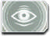 | Шпион | любая ячейка рядом с наблюдательным пунктом, где стоит ваш шпион |
Стоимость ячейки оплачивается немедленно, до эффектов ячейки и карты. Не можете заплатить — не можете отправить туда агента.
В три ячейки пускают только при 2 влияниях в нужной фракции: «Привилегии» — у Императора, «Поставки» — в Гильдии Космогации, «Сиетч Табр» — у Фрименов.
Стрелки на картах и поле: можете заплатить стоимость слева или сверху от стрелки, чтобы получить эффект справа или снизу. Платить не обязательно. Заплатить и получить такой эффект можно лишь 1 раз в ход.
На карте конфликта, открытой в начале раунда, указаны награды за сражение. Чтобы бороться за них, разместите в зоне конфликта боевые единицы: отряды (кубики) и песчаных червей (фишки).
Наём. За каждый символ кубика возьмите 1 кубик из своего запаса и положите в гарнизон. Нет кубиков в запасе — нанять нельзя.
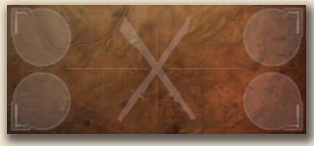
Размещение. Отправив агента в ячейку конфликта (скрещённые мечи и пустыня на картинке ячейки), можете разместить в зоне конфликта:
Нанятые, но не размещённые отряды идут в гарнизон. Сами по себе отряды в гарнизоне в сражении не участвуют. Ячейки конфликта есть на планете, а ещё у Гильдии («Хайлайнер») и у Фрименов («Война в пустыне», «Фримпакет»).
Эффект с символом червя сразу ставит фишку червя в зону конфликта: в гарнизоне черви находиться не могут. Два ограничения:
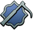
обычно нужен жетон крюка Подателя в вашем гарнизоне — его дают в «Сиетч Табре»;Червь даёт 3 очка боевой силы и удваивает награду.
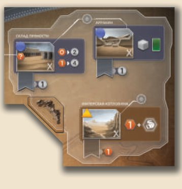
Некоторые карты конфликта дают победителю контроль над «Арракином», «Складом Пряности» или «Имперской котловиной». Положите жетон контроля в область с флажком под ячейкой, заменив чужой.
Пока жетон Барьерной Стены лежит на поле, в сражениях за эти три локации нельзя размещать песчаных червей. Эффект «подрыв Барьерной Стены»
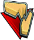
позволяет убрать жетон в коробку до конца партии — после этого черви участвуют в любом сражении.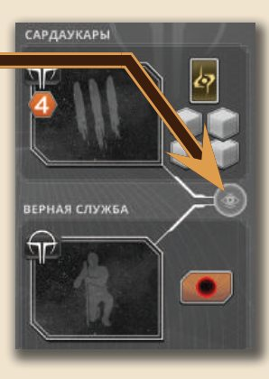
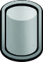
Эффект с символом шпиона позволяет поставить фишку шпиона в незанятый наблюдательный пункт. Если шпионов в запасе нет, можно сначала вернуть своего с поля без эффекта. Некоторые эффекты пускают шпиона только к ячейке определённого типа; если такого свободного пункта нет, шпион не отправляется.Символ «возвращение шпиона» — верните любого своего шпиона в запас; обычно это условие сильного эффекта.
Шпиона можно вернуть и без этого символа, ради одного из двух эффектов:
Два шпиона у одной ячейки: можно вернуть обоих, но эффекты должны быть разными — один для внедрения, другой для разведки. Дважды разведка не применяется.
Символ агента «шпион» на карте позволяет отправить агента в любую ячейку рядом с пунктом, где стоит ваш шпион. Если ячейка свободна, возвращать шпиона не нужно.
Когда агентов не осталось или вы решили больше их не отправлять, в свой ход раскройте карты. Строго по порядку:
Очки убеждения дают раскрытые карты и некоторые ячейки («Зал собраний», место в Высшем Совете). На них покупаются карты рынка Империи и резерва: «Подготовка пути» и «Пряность должна поступать». Стоимость — в правом верхнем углу карты.
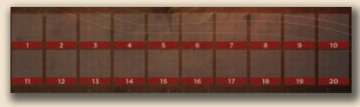
В отличие от базовой игры, силу можно считать по ходу применения эффектов раскрытия — это важно, например, для способности Гурни Халлека.
Начиная с первого игрока по часовой стрелке, каждый, у кого в зоне конфликта есть хотя бы 1 боевая единица, может разыграть любое количество карт сражения или спасовать. Спасовав, можно играть карты позже: сражение начинается, только когда все участники спасуют подряд.
Если карта меняет число боевых единиц или силу, сразу передвиньте жетон на треке. Нет боевых единиц в зоне конфликта — сила 0.
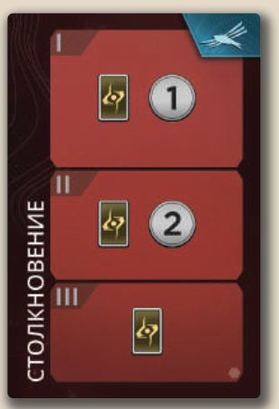
После наград: отряды из зоны конфликта — в личный запас, не в гарнизон; жетоны силы — на «0»; черви — в общий запас.
| Ничья за… | Что происходит |
|---|---|
| 1-е место | Все претенденты получают вторую награду. Карту конфликта не забирает никто. При 1–3 участниках другие награды не разыгрываются. При 4 и 6 участниках: если претендентов больше 2 — остальные награды не разыгрываются; если ровно 2 — прочие участники борются за третью награду. |
| 2-е место | Все претенденты получают третью награду. Вторая не выдаётся. Победитель получает первую награду и карту как обычно. |
| 3-е место | Никто из претендентов не получает награду. |
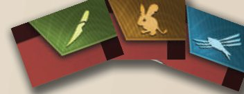
На картах конфликта и задач есть 3 боевых символа: крис, кенгуровая мышь и орнитоптер. Забрав карту конфликта, проверьте, есть ли в запасе другая открытая карта конфликта или задачи с таким же символом. Если есть — переверните обе лицом вниз и получите 1 ПО.
Универсальный символ составляет пару с любым из трёх, но только в конце игры.
Если вы получили награду и на вашей стороне был хотя бы 1 песчаный червь, удвойте её. Не удваиваются только контроль над ячейкой и боевой символ на карте. Если награда требует оплаты, можно оплатить и получить её второй раз.
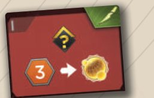
С червём такая награда даёт 2 влияния (2 в одной фракции или по 1 в разных) и возможность получить 1 ПО за 3 Пряности или 2 ПО за 6 Пряности.В каждую из ячеек «Глубокая пустыня», «Имперская котловина» и «Котловина Хагга», где нет агента, положите 1 фишку Пряности из общего запаса — на символ Подателя или поверх накопленных. В партии с 6 участниками есть ещё «Эрг Хаббанья».
Отправив агента в такую ячейку, игрок забирает всю бонусную Пряность вдобавок к основному эффекту.
Если у кого-либо 10 ПО или более либо в колоде конфликта не осталось карт — наступает конец игры. Иначе:
Вводит контракты, за выполнение которых дают ресурсы. Первую партию лучше сыграть без него. Состав: 20 жетонов контрактов, 4 карты Империи, 4 карты интриг, планшет лидера Шаддама Коррино IV и 10 жетонов контрактов иксианцев для «Расцвета иксианцев».
Подготовка: перемешайте 20 жетонов контрактов в стопку лицом вниз, 2 выложите лицом вверх в ячейки под Ландсраадом. Замешайте 4 карты интриг и 4 карты Империи в соответствующие колоды. Можно выбрать лидера Шаддама Коррино IV.
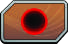
Символ контракта. Возьмите один из раскрытых жетонов в личный запас и сразу выложите новый из стопки. Если жетоны кончились — получите 2 солярия. Без мини-дополнения символ всегда даёт 2 солярия.Выполнив контракт, объявите об этом, получите награду и переверните жетон. Жетоны остаются у вас: с ними связаны эффекты некоторых карт.
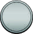
тратятся в Ландсрааде: оружейник, отряды, место в Высшем Совете.Свежие правила и ответы на вопросы: duneimperium.com/FAQ
Все ячейки основного поля по алфавиту. Ячейки конфликта отмечены изображением пустыни и скрещёнными мечами: отправив туда агента, можно ввести в зону конфликта нанятых в этот ход и до 2 боевых единиц из гарнизона. Ячейки поля для 6 игроков — в своём разделе.

Наймите 1 отряд и возьмите 1 карту

. Игрок, контролирующий «Арракин», получает 1 солярий.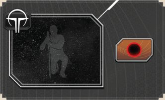
Получите 1 влияние во фракции Императора. С мини-дополнением «КООАМ» возьмите 1 жетон контракта ; если жетоны закончились или вы играете без «КООАМ», получите 2 солярия.
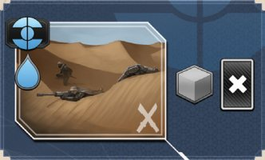
Получите 1 влияние во фракции Фрименов. Наймите 1 отряд и удалите 1 карту .
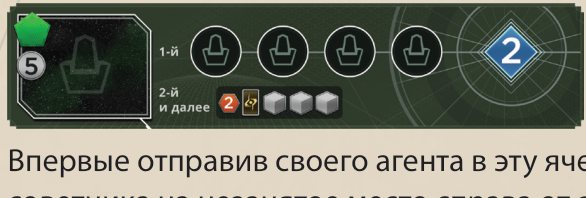
Впервые отправив сюда агента, положите свою фишку советника на свободное место справа от ячейки: до конца игры при раскрытии карт вы получаете 2 очка убеждения. Отправляя агента сюда в следующие разы, получите 2 Пряности, возьмите 1 карту интриги и наймите 3 отряда.
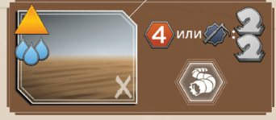
Получите всю бонусную Пряность из ячейки. Затем выберите одно: получить 4 Пряности ИЛИ, если у вас есть жетон крюка Подателя , разместить в зоне конфликта 2 песчаных червей .
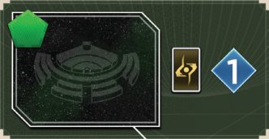
Возьмите 1 карту интриги. Если во время раскрытия карт ваш агент стоит в этой ячейке, получите 1 очко убеждения.
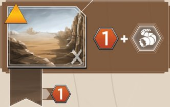
Получите 1 Пряность и всю бонусную Пряность из ячейки. Игрок, контролирующий «Имперскую котловину», получает 1 Пряность.
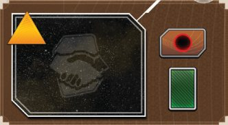
Возьмите 1 карту. С мини-дополнением «КООАМ» возьмите 1 жетон контракта ; если жетоны закончились или вы играете без «КООАМ», получите 2 солярия.
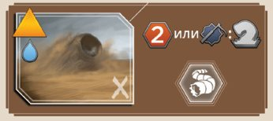
Получите всю бонусную Пряность из ячейки. Затем выберите одно: получить 2 Пряности ИЛИ, если у вас есть жетон крюка Подателя , разместить в зоне конфликта 1 песчаного червя .
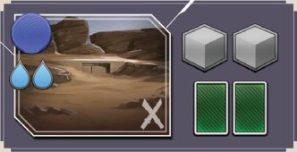
Наймите 2 отряда и возьмите 2 карты.
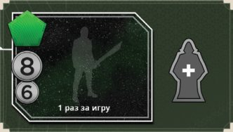
Сюда можно отправить агента только 1 раз за игру. Возьмите фишку оружейника — третью фишку агента, отложенную при подготовке — и положите на планшет лидера. С этого момента вы отправляете 3 агентов за раунд, включая текущий. В игре с 6 участниками ячейка работает иначе.
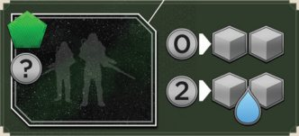
Наймите 2 отряда. Если заплатили 2 солярия, также получите 1 воду.
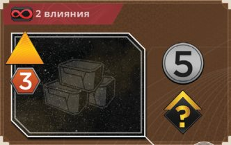
Получите 5 соляриев и 1 влияние в любой фракции.
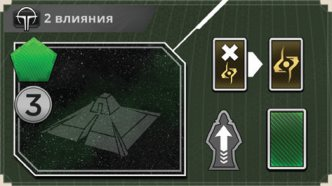
Можете сбросить 1 карту интриги, чтобы взять 1 карту интриги. Верните 1 другого вашего агента с поля и возьмите 1 карту.
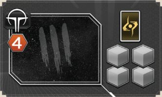
Получите 1 влияние во фракции Императора. Возьмите 1 карту интриги и наймите 4 отряда.
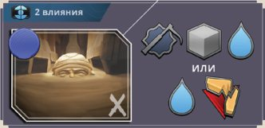
Выберите одно: взять жетон крюка Подателя (если у вас его ещё нет), нанять 1 отряд и получить 1 воду — ИЛИ — получить 1 воду и по желанию убрать жетон Барьерной Стены .
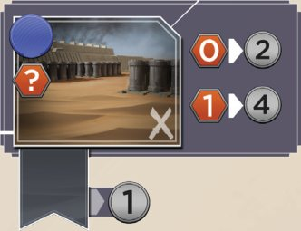
Получите 2 солярия. Если заплатили 1 Пряность, вместо этого получите 4 солярия. Игрок, контролирующий «Склад Пряности», получает 1 солярий.
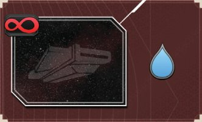
Получите 1 влияние во фракции Гильдии Космогации. Получите 1 воду.
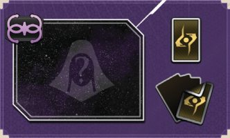
Получите 1 влияние во фракции Бене Гессерит. Возьмите 1 карту интриги. Каждый соперник, у которого 4 или более карт интриг, отдаёт вам 1 случайную .
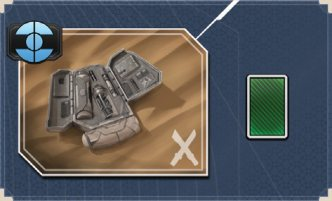
Получите 1 влияние во фракции Фрименов. Возьмите 1 карту.
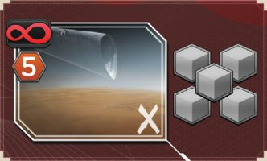
Получите 1 влияние во фракции Гильдии Космогации. Наймите 5 отрядов.
Получите 1 влияние во фракции Бене Гессерит. Возьмите 1 карту и отправьте 1 шпиона .
При подготовке ваш третий агент (оружейник) кладётся рядом с полем. Его можно получить на всю оставшуюся игру, отправив одного из своих агентов в ячейку «Оружейник».
Карты, разыгранные при отправке агентов или выложенные при раскрытии. Они остаются активными до конца вашего хода раскрытия, если вы не удалите их из колоды.
Можете убрать с поля (и из игры) жетон Барьерной Стены.
Победив в сражении и забрав карту конфликта, проверьте, есть ли в личном запасе неперевёрнутая карта конфликта или задачи с таким же символом: крис, кенгуровая мышь, орнитоптер. Если есть, переверните обе карты и получите 1 ПО.
В конце игры можно составить пару из универсального символа и любого из 3 боевых символов на вашей открытой карте конфликта или задачи. Переверните обе карты и получите 1 ПО.
Бонус под стоимостью карты. Вы получаете его 1 раз — при покупке этой карты. Разыгрывая карту позже, бонус уже не получаете.
Запись вида «2 влияния в …:» означает, что эффект можно применить, только если у вас есть указанное количество влияния в этой фракции.
Переместите агента из занимаемой ячейки на планшет лидера. Его можно использовать ещё раз в свой следующий ход в этом же раунде. Нельзя вернуть агента, отправленного в этот ход.
Заберите фишку своего шпиона из любого наблюдательного пункта и положите её в личный запас.
Возьмите карту из колоды интриг. Держите её втайне и отдельно от основных карт. Карт интриг может быть сколько угодно, смотреть их можно в любое время.
Возьмите карту из личной колоды. Если колода пуста, перемешайте сброс, сформируйте новую колоду и возьмите карту.
Символ в правом нижнем углу карты означает её принадлежность к этой игре. Игровых эффектов не имеет.
Разыгрывая карту «Кольцо с печаткой», можете применить правую способность на планшете лидера: она отмечена таким же символом.
Без мини-дополнения «КООАМ» получите 2 солярия. С ним — возьмите 1 из раскрытых жетонов контрактов; если жетоны кончились, возьмите 2 солярия.
Победив в сражении за «Арракин», «Склад Пряности» или «Имперскую котловину», положите свой жетон контроля в область с флажком под этой ячейкой. Чужой жетон замените. Если на открываемой карте конфликта указана ячейка, которую вы уже контролируете, можете разместить в зоне конфликта 1 отряд из личного запаса.
Каждый соперник, у которого 4 или более карт интриг, отдаёт вам 1 из них, выбранную случайно.
Возьмите из общего запаса жетон крюка Подателя, если у вас его ещё нет, и положите в свой гарнизон до конца партии. С ним вы можете использовать песчаных червей. Двоеточие после символа значит, что для эффекта нужен этот жетон.
Каждый символ меча добавляет 1 очко боевой силы, если вы участвуете в сражении.
Вы нанимаете отряд: возьмите кубик из своего запаса и поместите в гарнизон. Если отряд нанят при отправке агента в ячейку конфликта, его можно сразу разместить в зоне конфликта.
Когда ваши отряды отступают, переместите их из зоны конфликта в свой гарнизон.
Обычно вы получаете их, раскрывая карты. На них покупаются карты на рынке Империи или из резерва. Стоимость карты указана в её правом верхнем углу.
Разместите в зоне конфликта рядом со своим гарнизоном фишку песчаного червя из общего запаса. Символ не имеет эффекта, если текущий конфликт идёт в локации, защищённой Барьерной Стеной.
Получив или потеряв 1 ПО, передвиньте свой маркер на 1 деление вверх или вниз по треку победных очков.
В фазе Подателей каждая ячейка с этим символом, где нет агента, накапливает 1 бонусную Пряность. Отправляя туда агента, вы получаете всю бонусную Пряность вдобавок к основному эффекту.
Получите влияние в указанной фракции: Император, Гильдия Космогации, Бене Гессерит, Фримены.
Получите 1, 2 или потеряйте 1 влияние. Фракцию выбираете сами. Получая 2 влияния, нельзя разделить их между двумя фракциями.
Солярии, Пряность, вода. Получая или тратя ресурсы, берите фишки из общего запаса или возвращайте их туда.
Сбросьте любую карту с руки. Это не может быть карта интриги, если не указано иное.
Эффект можно применить, если у вас есть ещё 1 или несколько активных карт Фрименов. Две карты со «связью фрименов» активируют друг друга независимо от порядка розыгрыша.
Запись «Союз с …:» означает, что эффект можно применить, только если у вас есть жетон союза указанной фракции.
Стрелка означает, что у эффекта справа или снизу от неё есть стоимость, указанная слева или сверху. Не оплатили — эффект не применяется. Стоимость ячейки обязательна, чтобы отправить туда агента, а эффекты, требующие оплаты, применять не обязательно. Оплатить стоимость можно не больше 1 раза в ход, кроме случаев удвоения награды.
Удалите любую вашу карту интриги.
Удалите 1 карту с вашей руки, из сброса или из числа активных. Карта из резерва возвращается в резерв, остальные убираются в коробку. Обычно удалять или нет, решаете вы, но иногда удаление карты — стоимость эффекта.
Поместите фишку шпиона из личного запаса в незанятый наблюдательный пункт. Иногда есть ограничение: «шпион рядом с ячейкой такого-то типа». Если шпионов в запасе нет, можно сначала вернуть своего шпиона из наблюдательного пункта без применения эффекта.
В одиночной игре и партии на двоих вам противостоят виртуальные соперники — оппоненты. Они отправляют агентов картами Дома Хагаль, нанимают отряды и участвуют в сражениях. Если оппонент набирает 10 или более ПО, игра кончается — и победить может он. Компоненты: 37 карт Дома Хагаль и 10 карт оппонентов.
Выберите цвет каждому оппоненту. По 1 его кубику — под треки всех 4 фракций, 3 отряда — в его гарнизон. Остальные отряды и 2 агентов — в его запас, оружейника — рядом с полем. И вы, и оппоненты начинаете с 1 водой и 3 шпионами.
В одиночной игре уберите из колоды Дома Хагаль карту «Новая колода» с пометкой «2И». Перемешайте остальные карты Дома Хагаль.
Карты задач. Одиночная игра: вы и оппоненты получаете по 1 случайной. Игра вдвоём: оппонент получает «Орнитоптер», остальные 2 карты случайно делятся между игроками; оппонент никогда не ходит первым.
| Сложность (соло) | Что меняется |
|---|---|
| Наёмник — лёгкий | У оппонентов нет отрядов в гарнизоне, вы получаете 1 карту интриги. |
| Сардаукар — средний | Без изменений. |
| Ментат — тяжёлый | «Сардаукар» + правила «Резкая эскалация», «Обдуманное размещение», «Расчётливая политика». |
| Квисатц Хадерах — сверхтяжёлый | «Ментат» + вы не можете получить оружейника. |
В фазе ходов оппоненты в порядке очерёдности отправляют агентов, пока те есть, но не раскрывают карты.
В ход оппонента раскройте верхнюю карту Дома Хагаль: она указывает ячейку для агента. Ячейка занята — раскрывайте дальше, пока не найдётся свободная. Колода кончилась или вышла «Новая колода» — перемешайте сброс.
Оппонент игнорирует стоимость и эффект ячейки и применяет эффекты с карты Дома Хагаль:
3 карты Дома Хагаль с отправкой шпиона указывают тип ячейки. Удалось поставить шпиона или нет — раскройте новую карту, чтобы оппонент отправил агента.
В ячейке конфликта оппонент дополнительно вводит до 2 отрядов из гарнизона, даже если карта не даёт найма. Оппоненты заключают и теряют союзы, но бонусы фракций не получают.
Оппоненты получают солярии, Пряность, воду и карты интриг только с карт Дома Хагаль и из конфликтов. Ячейки им ничего не дают.
Оружейник. Сначала оппонент копит на оружейника. Как только суммарно набрано столько ресурсов, сколько указано на его карте, он сбрасывает их и получает третьего агента. Порядок трат: солярии → Пряность → карты интриг → вода; остаток сохраняется.
Обмен на ПО. Получив оружейника, оппонент меняет ресурсы на ПО: каждый раз, когда накапливается указанное количество одного ресурса, сбросьте его и начислите 1 ПО.
Если карта отправляет агента в «Глубокую пустыню», «Котловину Хагга» или «Имперскую котловину», оппонент всегда забирает бонусную Пряность. Далее:
Оппоненты не возвращают шпионов по одному и не делают внедрение и разведку. Как только оппонент отправляет третьего шпиона, он возвращает 2 других и активирует эффект шпионской сети со своей карты. Если сеть сработала до отправки агента и дала отряды, а агент пошёл в ячейку конфликта — эти отряды идут в зону конфликта.
Первые три обязательны на уровнях «Ментат» и «Квисатц Хадерах», но годятся и на других.
Две команды по трое во главе с военачальниками — Муад’Дибом и Шаддамом Коррино IV. Они участвуют всегда и всегда в разных командах; остальные 4 игрока — их союзники, по 2 на каждого. У каждого свой маркер ПО, конец игры наступает как обычно, результат команды — сумма ПО трёх игроков.
У военачальников нет армий: они не сражаются и не получают наград, но нанимают боевые единицы для союзников. Союзники сражаются по отдельности и силу не складывают. Доступны все 3 награды, и две из них может взять одна команда.
Компоненты: 2 планшета военачальников, 2 стартовые колоды, личные наборы военачальников (3 жетона агентов, 3 шпиона, 2 диска, маркер ПО, советник, кубик фракции), 6 жетонов бонуса оружейника, 2 жетона союзов — Великие Дома и Периферийные миры.
Выберите лидеров и разделитесь на команды до рассадки. Военачальники садятся напротив: Муад’Диб у нижней стороны поля (Арракис), Шаддам у верхней (Ландсраад). Союзники садятся по обе стороны от чужого военачальника — так команды ходят по очереди.
Военачальник пользуется картами и ячейками как обычно, но эффекты, которые он не может применить сам, применяет союзник.
Активированный союзник получает: влияние на треках поля (и его потерю), наём и размещение боевых единиц (решает союзник), мечи.
На планшете 2 ячейки, доступные только этому военачальнику. Отправляя туда агента, он получает 1 влияние во фракции на планшете. Только Шаддам получает влияние у Императора и только Муад’Диб — у Фрименов.
Военачальник не получает влияние на поле, но для эффектов считается, что у него столько влияния во фракции, сколько у его союзника с наибольшим влиянием — даже при активации другого союзника.
Боевые единицы и гарнизон активированного союзника считаются принадлежащими и военачальнику: нанял или разместил военачальник — считается, что это сделали оба. Карт конфликта союзников у военачальника при этом нет.
Наймите 3 отряда и распределите их как угодно между союзниками вашей команды. Эти отряды можно разместить в зоне конфликта.
Выберите игрока своей команды. Каждый из вас может отдать другому любое количество карт интриг, Пряности, воды или соляриев — только один тип. Можно ничего не давать взамен.
Каждый игрок вашей команды получает 1 солярий, 1 Пряность, 1 воду или возможность отправить 1 шпиона.
Оружейник — только на 1 раунд. В конце раунда, где вы разыграли всех 3 агентов (союзник) или жетон с 2 стрелками (военачальник), уберите оружейника в коробку. Не разыграли — можно в следующих раундах.
Вместе с оружейником вы получаете жетон бонуса, который действует до конца игры: +2 меча в ход раскрытия. Военачальник отдаёт эти мечи активированному союзнику.
Рынок Престола. Шаддам может переносить карты с рынка Империи на личный рынок Престола; взамен сразу выкладывается новая карта Империи. Покупать с рынка Престола могут только Шаддам и его союзники. Карт там может быть сколько угодно, взамен купленных новые не выкладываются, и эффекты вроде «Манипуляций» на них не действуют.
Другие коробки серии не рассчитывались на 6 игроков; спорные случаи решает игрок за Шаддама.
Получите 1 влияние во фракции Фрименов. Возьмите 1 карту и получите 1 Пряность.
Получите 1 влияние во фракции Великих Домов. Наймите 3 отряда и распределите их как угодно между союзниками вашей команды. Эти отряды можно разместить в зоне конфликта.
Получите 1 влияние во фракции Фрименов. Наймите 2 отряда.
Получите 1 влияние во фракции Периферийных миров. Возьмите 1 карту интриги, возьмите 1 карту и удалите 1 карту.
Наймите 1 отряд и возьмите 1 карту интриги.
Получите 1 влияние во фракции Императора. Получите 3 солярия.
Сюда можно отправить агента только 1 раз за игру. Возьмите фишку оружейника — использовать её можно только 1 раз. Положите жетон бонуса оружейника на поле: с этого момента вы получаете 2 меча каждый раз, когда раскрываете карты.
Получите 1 влияние во фракции Великих Домов. Получите 1 Пряность. Выберите игрока из вашей команды: каждый из вас может отдать другому любое количество карт интриг, Пряности, воды или соляриев (только один тип).
Получите 1 влияние во фракции Периферийных миров. Возьмите жетон контракта (если их не осталось, получите 2 солярия).
Получите 2 Пряности и всю бонусную Пряность из ячейки. Возьмите 1 карту.
Сначала основные правила (20 страниц), затем справочник ячеек (2), правила для 1–2 игроков (4) и для 6 игроков (8). Листайте свайпом; нажмите на страницу, чтобы открыть её на весь экран.